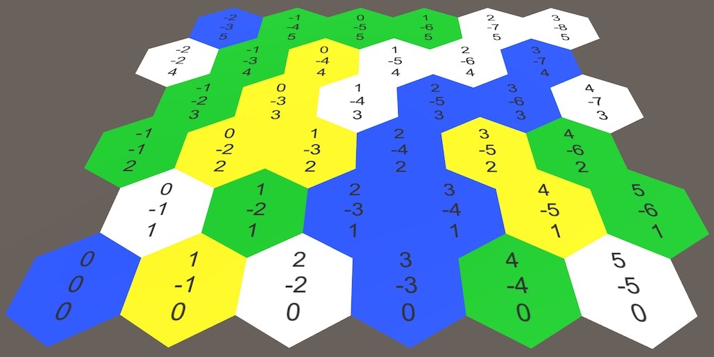

Hex Map 2.1.0
Code Cleanup
- Restructure code.
- Fix unit selection.
- Disable wrapping for default map.

This tutorial is made with Unity 2021.3.16.f1 and follows Hex Map 2.0.0.
Code Restructuring
This version is about systematically changing code to match modern Unity and C# styles. More such changes will be made in the future, but won't be called out if they are purely stylistic. Also, code documentation for top-level public types and public members has been added. The code documentation will not be shown in tutorials.
Configuration Fields and Properties
All public configuration fields have become private and serializable instead. Non-static public fields that are referenced outside their containing classes have become public properties.
HexFeatureCollection
The HexFeatureCollection type is only used by HexFeatureManager, so I have removed the HexFeatureCollection C# asset and made it an nested type of the manager.
public class HexFeatureManager : MonoBehaviour {
[System.Serializable]
public struct HexFeatureCollection { … }
}
Fixes and Changes
Unity Selection
It used to be possible to select units during edit mode directly after entering play mode. Toggling edit mode while playing got rid of that. This is fixed by disabling the HexGameUI component of the Game UI game object in the scene so it's initial state is correct.
Default Map
The cellCountX, cellCountZ and wrapping configuration fields have been removed from HexGrid. They have been replaced with properties and the initial map has been hard-coded to 20×15 without wrapping in Awake. Wrapping used to be enabled for this map, but due to its small size it's better to not wrap.
The next tutorial is Hex Map 2.2.0.